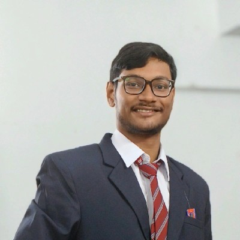

Bratish Dasgupta
Bankura,West Bengal-722101
dasguptaratul2004@gmail.com | bratish-dasgupta
|

|
Objective
To leverage my academic background in Computer Science and Engineering to contribute to innovative projects and solutions
in the technology industry. I aim to gain hands-on experience and enhance my skills in software development, data analysis,
and problem-solving. My goal is to grow into a proficient engineer, contributing to cutting-edge advancements in technology.
Education
Chandigarh University| August2023-Present
Mohali,Punjab
Bachelor of Technology in Computer Science and Engineering
Bankura Zilla School| August,2020-July,2022
Bankura, West Bengal
Intermediate (West Bengal Board)
Percentage-90%
Vivekananda Siksha Niketan High School| Pass out- August,2020
Bankura, West Bengal
Matriculation (West Bengal Board)
Percentage-91%
Technical Skills
Languages:
Python, Java, C, C++, HTML, CSS.
Developer Tools:
VS Code, Eclipse, IntelliJ IDEA, Python IDLE.
Technologies/Framework:
Data-Structure, OOPs.
Projects
Bank Management System | Python, Python IDLE
- Designed and developed the Independent Bank project, a robust banking system to handle customer and employee transactions
- Implemented employee login and customer login systems, ensuring secure access and role-based functionalities.
- Developed interactive features like Add Money and Withdraw Money, enabling smooth transaction processing and improving user experience by streamlining essential banking operations.
- Integrated Tkinter-based graphical elements, creating an intuitive GUI that integrates navigation and usability for both customers and employees.
Library Management System | C++,VS Code
- Built a Library Management System using C++ to automate and simplify library operations.
- Added features like add book, remove book, and current book list for efficient inventory management.
- Implemented login functionality for secure access by librarians and users.
- Enabled book issuance and creation of book accounts, improving user experience and operational flow.
Music Recommendation System| Python, Machine Learning, Google Colab
- Built a Music Recommendation System using Python on Google Colab to suggest personalized tracks.
- Leveraged SVM (Support Vector Machine) for accurate recommendation based on user preferences and patterns.
- Integrated data preprocessing and feature extraction to improve model performance and recommendation quality.
- Focused on scalability and efficiency to handle diverse music datasets and deliver real-time suggestions.
Multiple Disease Prediction System | Python, Machine Learning, Google Colab
- Developed a Multiple Disease Detection System using Python and machine learning to diagnose diabetes, Parkinson’s, and heart disease.
- Compared models like SVM, Random Forest, KNN, Logistic Regression, and Gaussian Naive Bayes to identify the most accurate predictor.
- Performed extensive data preprocessing and feature selection for improved model efficiency and performance.
- Focused on accurate predictions to assist in early disease diagnosis and enhance healthcare outcomes.
Achievements
- Core Committee Member of CUFest 2024
- Gold Medalist in Maths Olympiad 2016 by V.S.N High School
- State Extempore Competition Winner ogranized by W.B Police in 2020
- Story Writing Competition Winner in 2018
About Me